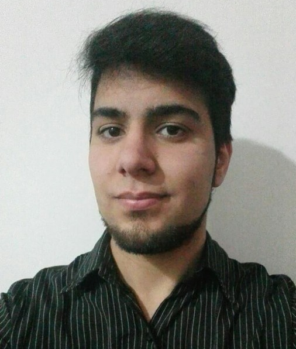

Introducción
Hola! Soy Tomás, 19 años, (casi) Técnico en Computación, autodidácta y amante de la tecnología.
El desarrollo de software es algo que me apasiona, estoy interesado principalmente en el desarrollo FullStack habiendo participado en varios proyectos escolares y propios.
Actualmente me encuentro en formación y abierto a propuestas laborales.
- Buenos Aires, Argentina
- 1564660487
- tomas.eaprile@gmail.com
Tomás Aprile
FullStack Developer Jr.
Formación académica
- Técnico en computación, 2012-2018, Escuela Técnica N°36 D.E. 15 Guillermo Alte. Brown Saavedra, CABA.
Formación complementaria
- Aprendé Programando Nivel 2, Ministerio de educación de la Ciudad de Buenos Aires - 2018
- Cisco IT Essentials, Cisco Networking Academy - 2018
- Aprendé Programando Nivel 1, Ministerio de educación de la Ciudad de Buenos Aires - 2017
Conocimientos
- Armado, reparación y mantenimiento de equipos informáticos
- Instalación y mantenimiento de redes informáticas
- Experiencia desarrollando software en:
- C/C++
- Java
- Javascript y NodeJS
- PHP (Frameworks, principalmente Codeigniter)
- Python (WebServers, principalmente Flask)
- Arduino (MQTT)
- MySQL y SQLite
Proyectos y participaciones destacables
- Vínculos solidarios a través de la tecnología - Proyecto de reacondicionamiento y donacion de equipos informáticos a escuelas públicas, 2015-2018
- Sistema Atlas - Sistema de gestión de alumnos, profesores y notas dirigido a instituciones educativas, 2018
- Olimpíada Nacional de Programación, Computación e Informática - Participación en instancia jurisdiccional, 2018